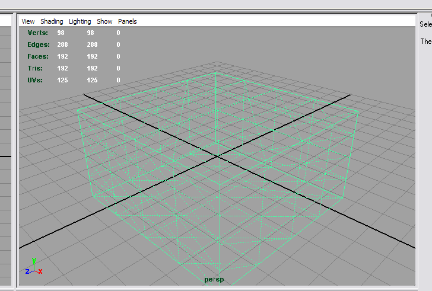
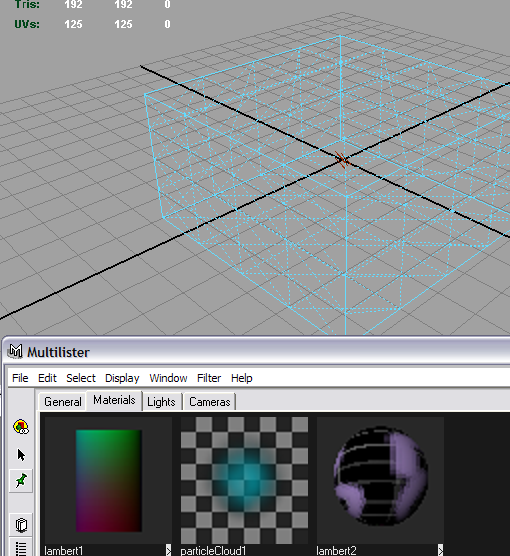
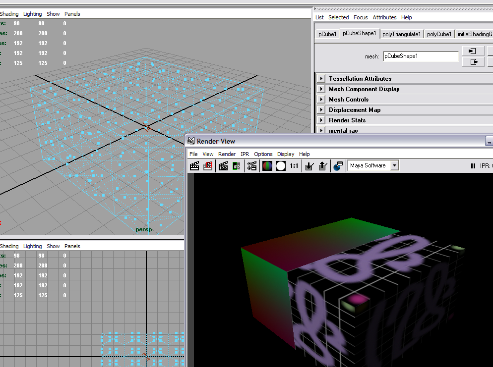
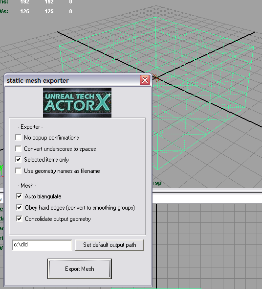
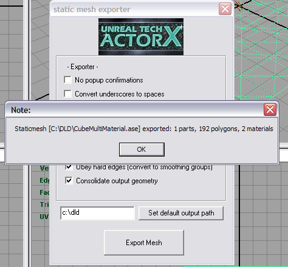

UDN
Search public documentation:
ExportingMeshesTutorial
日本語訳
中国翻译
한국어
Interested in the Unreal Engine?
Visit the Unreal Technology site.
Looking for jobs and company info?
Check out the Epic games site.
Questions about support via UDN?
Contact the UDN Staff
中国翻译
한국어
Interested in the Unreal Engine?
Visit the Unreal Technology site.
Looking for jobs and company info?
Check out the Epic games site.
Questions about support via UDN?
Contact the UDN Staff
Exporting Meshes Tutorial
Document Summary: A primer on how to export mesh geometry from a 3D modeling program using the ActorX export plugin tools. Document Changelog: Created by Erik de Neve?.Overview
This is a step-by-step primer on how to export a static mesh with multiple material assignments from 3D Modeling programs using the ActorX plugin. Note: Here at Epic, we tend to switch between 3D Studio Max and Maya so we use Maya's Z up option to match that of Max; and we don't use the "assume Maya coordinates" when importing into the editor. Regardless of using Max or Maya, we still have to rotate the mesh 90 degrees on the X axis to get the character facing positive X. In general, to export your Render mesh, simply export as ASCII Export (.ASE) format. Make sure the following options are set: Output Options- Mesh Definition
- Materials
- Mesh Normals
- Mapping Coordinates
Exporting Content: Maya
A more technical information exporting meshes from Maya can be found in the Static Meshes from Maya page.Installing the Maya ActorX plug-in
Choose the appropriate plug-in for your specific version of Maya from the ActorX page. Unzip the file, and install the ActorXTool.MLL file into your plug-ins folder, for example ...\Maya6.0\bin\plug-insSetting up the scene in Maya
Create the mesh, in this case a simple cube. Make sure all polygons are triangulated.  Using two textures available in raw (Targa 24 bit) format, create two materials in the multilister.  Rename the materials appropriately. Assign the materials to parts of the mesh by selecting the desired faces ( press and hold space -> "face" , select faces, then in the multilister, right click, "assign to selection".)  Now go back to 'item' selection mode, and select the mesh.Exporting the scene
Start the mesh export dialog by typingaxmesh into the command line (bottom of screen). The following dialog comes up.

Since the mesh is the only object in the scene that is selected, and we checked "selected items only", the mesh will be exported, and a confirmation dialog pops up, notifying of how many meshes, polygons and materials were exported.

Exporting Content: Max
A more technical information exporting meshes from Max can be found in the Static Meshes from Max? page.Installing the Max ActorX plug-in
Choose the appropriate plug-in for your specific version of Max from the ActorX page. Unzip the file, and install the into your plug-ins folder.Setting up the scene in Max
Exporting the scene
Materials
The order on export is defined by the materials themselves. See the ActorX pages for more details, including tutorials for Max and Maya. In Max, make your material a multi sub object material and name the sub materials skin00, skin01, skin02 etc. to define the order In Maya, perform the following steps:- Open up Hypershade.
- Double click on your shader node to open the attribute editor for that shader.
- At the top where the shader name is there is two arrows next to it, click the bottom one.
- This will take you to the shadingEngine properties, change the name to skin00, skin01, skin02 etc. to define the order.